Benjamin Jäger
Slides first developed by Mine Çetinkaya-Rundel. Derivative of OpenIntro slides, shared under a CC BY-SA licence.
In this unit we will learn to quantify the relationship between two numerical variables, as well as modeling numerical response variables using a numerical or categorical explanatory variable.
The scatterplot below shows the relationship between HS graduate rate in all 50 US states and DC and the % of residents who live below the poverty line (income below $23,050 for a family of 4 in 2012).
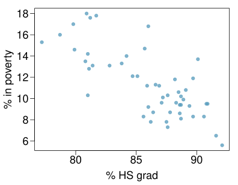
Response variable?
% in poverty
Explanatory variable?
% HS grad
Relationship?
linear, negative, moderately strong
The linear model for predicting poverty from high school graduation rate in the US is
\[\hat{poverty} = 64.78 - 0.62 * HS_{grad}\]
The “hat” is used to signify that this is an estimate.
The high school graduate rate in Georgia is 85.1%. What poverty level does the model predict for this state?
\[64.78 - 0.62 * 85.1 = 12.018\]
Which of the following appears to be the line that best fits the linear relationship between % in poverty and % HS grad? Choose one.
(a)
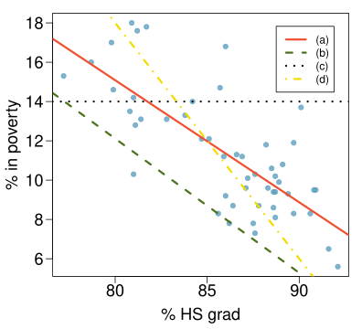
Residuals are the leftovers from the model fit: Data = Fit + Residual
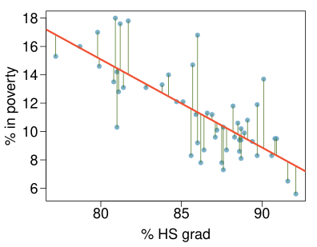
Residual
Residual is the difference between the observed (\(y_i\)) and predicted \(\hat{y}_i\). \[e_i = y_i - \hat{y}_i\]
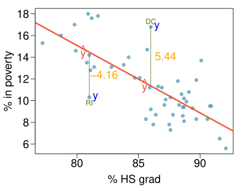
Which of the following is the best guess for the correlation between % in poverty and % HS grad?
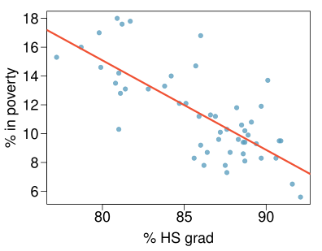
Which of the following is the best guess for the correlation between % in poverty and % HS grad?
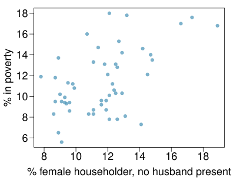
Which of the following is has the strongest correlation, i.e. correlation coefficient closest to +1 or -1?
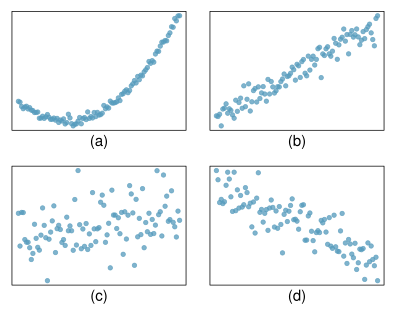
[Participate ⟹ strawpoll.live and use the code 833295]
(b) \(\rightarrow\) correlation means linear association
We want a line that has small residuals:
Why least squares?
\[\color{#0DA6FF}{{ \hat{y} = \beta_0 + \beta_1 x }}\]
\(\hat{y}\): Predicted value of the response variable, \(y\)
\(\beta_0\): Intercept, parameter
\(\beta_1\): Slope, parameter
\(x\): Explanatory variable
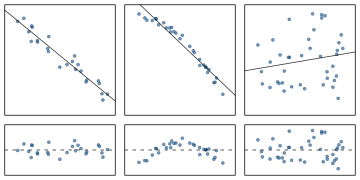
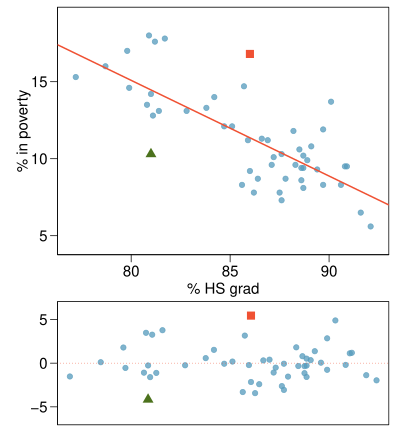
\(\blacktriangle\) RI: \[\begin{align*} \%~HS~grad &= 81 \qquad \%~in~poverty = 10.3 \\ \widehat{\%~in~poverty} &= 64.68 - 0.62 * 81 = 14.46 \\ e &= \%~in~poverty - \widehat{\%~in~poverty} \\ &= 10.3 - 14.46 = \color{#009900}{\text{$-4.16$}} \end{align*}\] \(\blacksquare\) DC: \[\begin{align*} \%~HS~grad &= 86 \qquad \%~in~poverty = 16.8 \\ \widehat{\%~in~poverty} &= 64.68 - 0.62 * 86 = 11.36 \\ e &= \%~in~poverty - \widehat{\%~in~poverty} \\ &= 16.8 - 11.36 = \color{red}{5.44} \end{align*}\]
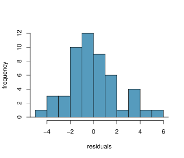
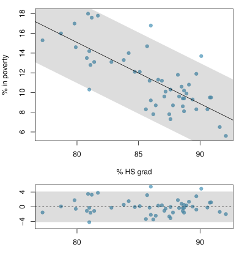
What condition is this linear model obviously violating?
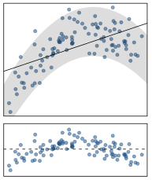
What condition is this linear model obviously violating?
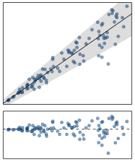
[Participate ⟹ strawpoll.live and use the code 833295]
| % HS grad | % in poverty | |
| \((x)\) | \((y)\) | |
| mean | \(\overline{x} = 86.01\) | \(\overline{y} = 11.35\) |
| sd | \(s_x = 3.73\) | \(s_y = 3.1\) |
| correlation | \(R = -0.75\) |
Slope
The slope of the regression can be calculated as \[b_1 = \frac{s_y}{s_x} R\]
In context… \[b_1 = \frac{3.1}{3.73} \times -0.75 = -0.62\]
Interpretation
For each additional % point in HS graduate rate, we would expect the % living in poverty to be lower on average by 0.62% points.
Intercept
The intercept is where the regression line intersects the \(y\)-axis. The calculation of the intercept uses the fact the a regression line always passes through \((\overline{x},\overline{y})\). \[b_0 = \overline{y} - b_1 \overline{x}\]
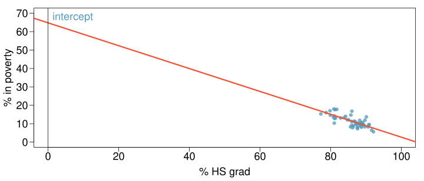
\[\begin{align*} b_0 &= 11.35 \\ & - (-0.62) \times 86.01 \\ &= 64.68 \end{align*}\]
Which of the following is the correct interpretation of the intercept?
[Participate ⟹ strawpoll.live and use the code 833295]
Since there are no states in the dataset with no HS graduates, the intercept is of no interest, not very useful, and also not reliable since the predicted value of the intercept is so far from the bulk of the data.
\[\widehat{\%~in~poverty} = 64.68 - 0.62~\%~HS~grad\]
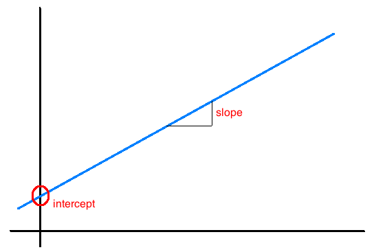
These statements are not causal, unless the study is a randomized controlled experiment.
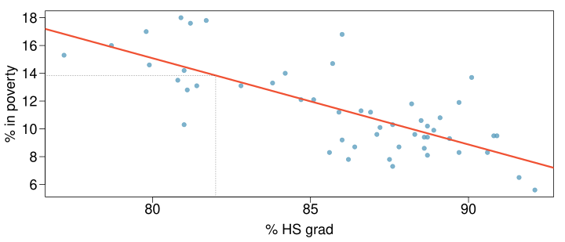
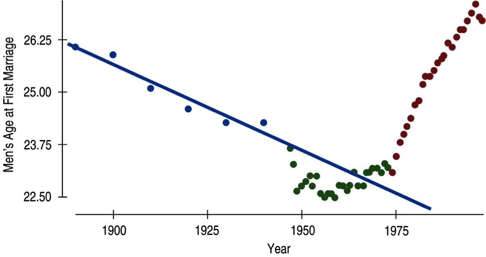
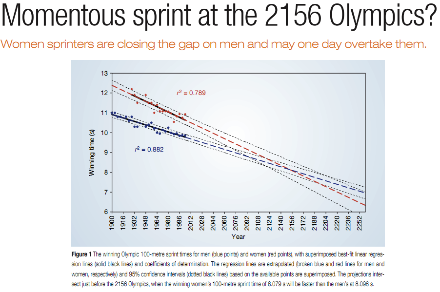
Which of the below is the correct interpretation of \(R = -0.62\), \(R^2 = 0.38\)?
[Participate ⟹ strawpoll.live and use the code 833295]
How do outliers influence the least squares line in this plot?
To answer this question think of where the regression line would be with and without the outlier(s). Without the outliers the regression line would be steeper, and lie closer to the larger group of observations. With the outliers the line is pulled up and away from some of the observations in the larger group.
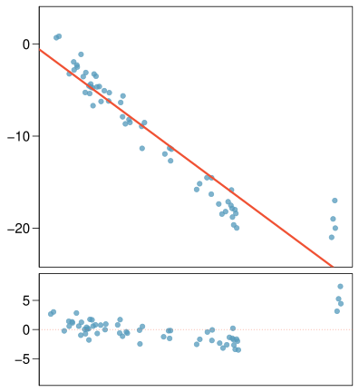
How do outliers influence the least squares line in this plot?
Without the outlier there is no evident relationship between \(x\) and \(y\).
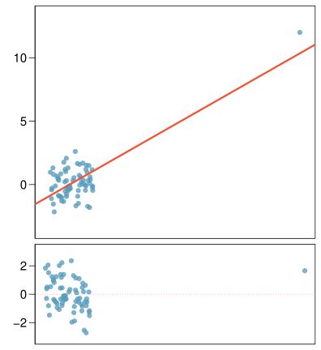
Data are available on the log of the surface temperature and the log of the light intensity of 47 stars in the star cluster CYG OB1.
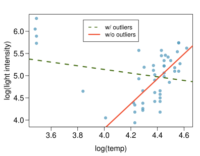
Which of the below best describes the outlier?
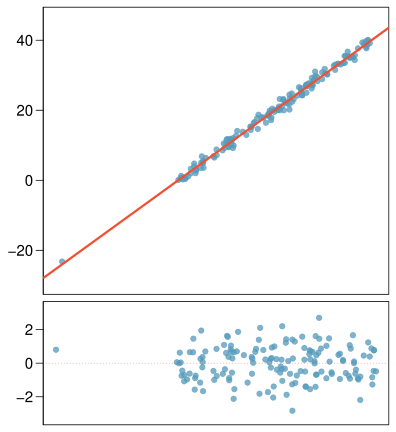
Does this outlier influence the slope of the regression line?
Not much…
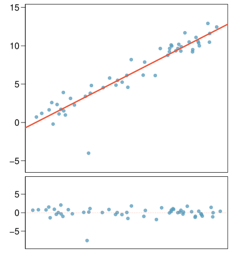
Which of following is true?
\[R = 0.08, R^2 = 0.0064\]
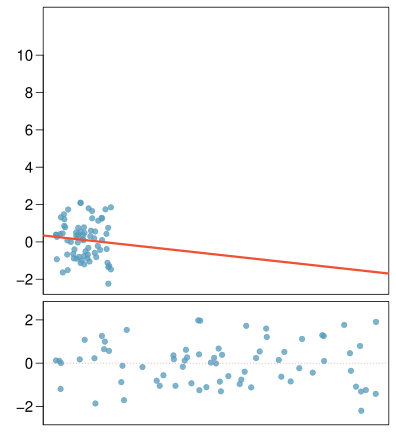
\[R = 0.79, R^2 = 0.6241\]
In 1966 Cyril Burt published a paper called “The genetic determination of differences in intelligence: A study of monozygotic twins reared apart?” The data consist of IQ scores for [an assumed random sample of] 27 identical twins, one raised by foster parents, the other by the biological parents.
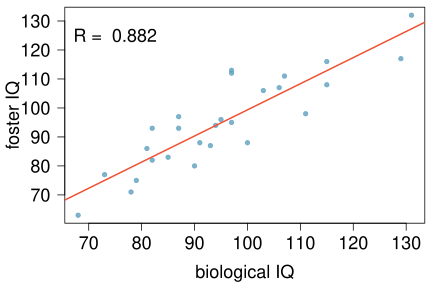
Which of the following is false?
Coefficients:
Estimate Std. Error t value Pr(>|t|)
(Intercept) 9.20760 9.29990 0.990 0.332
bioIQ 0.90144 0.09633 9.358 1.2e-09
Residual standard error: 7.729 on 25 degrees of freedom
Multiple R-squared: 0.7779, Adjusted R-squared: 0.769
F-statistic: 87.56 on 1 and 25 DF, p-value: 1.204e-09 Assuming that these 27 twins comprise a representative sample of all twins separated at birth, we would like to test if these data provide convincing evidence that the IQ of the biological twin is a significant predictor of IQ of the foster twin. What are the appropriate hypotheses?
| Estimate | Std. Error | t value | Pr(\(>\)\(|\)t\(|\)) | |
|---|---|---|---|---|
| (Intercept) | 9.2076 | 9.2999 | 0.99 | 0.3316 |
| bioIQ | 0.9014 | 0.0963 | 9.36 | 0.0000 |
| Estimate | Std. Error | t value | Pr(\(>\)\(|\)t\(|\)) | |
|---|---|---|---|---|
| (Intercept) | 9.2076 | 9.2999 | 0.99 | 0.3316 |
| bioIQ | 0.9014 | 0.0963 | 9.36 | 0.0000 |
\[\begin{eqnarray*} T &=& \frac{\color{#FF8000}{0.9014} - 0}{\color{#009900}{0.0963}} = \color{#FF8000}{9.36} \\ \phantom{df }&\phantom{=}&\phantom{ 27 - 2 = 25} \\ \phantom{p-value }&\phantom{=}&\phantom{ P(|T| > \color{#FF8000}{9.36}) < \color{blue}{0.01}} \end{eqnarray*}\]
\[\begin{eqnarray*} T &=& \frac{\color{#FF8000}{0.9014} - 0}{\color{#009900}{0.0963}} = \color{#FF8000}{9.36} \\ df &=& 27 - 2 = 25 \\ \phantom{p-value }&\phantom{=}&\phantom{ P(|T| > \color{#FF8000}{9.36}) < \color{blue}{0.01}} \end{eqnarray*}\]
\[\begin{eqnarray*} T &=& \frac{\color{#FF8000}{0.9014} - 0}{\color{#009900}{0.0963}} = \color{#FF8000}{9.36} \\ df &=& 27 - 2 = 25 \\ p-value &=& P(|T| > \color{#FF8000}{9.36}) < \color{blue}{0.01} \end{eqnarray*}\]
What can you say about the relationship between % college graduate and % Hispanic in a sample of 100 zip code areas in LA?
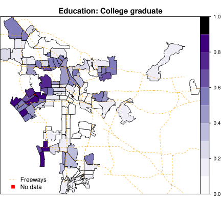
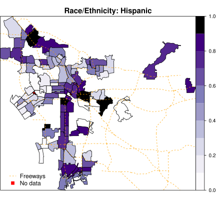
What can you say about the relationship between of % college graduate and % Hispanic in a sample of 100 zip code areas in LA?
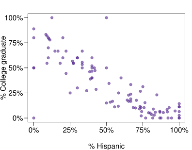
Which of the below is the best interpretation of the slope?
| Estimate | Std. Error | t value | Pr(\(>\)\(|\)t\(|\)) | |
|---|---|---|---|---|
| (Intercept) | 0.7290 | 0.0308 | 23.68 | 0.0000 |
| %Hispanic | -0.7527 | 0.0501 | -15.01 | 0.0000 |
[Participate ⟹ strawpoll.live and use the code 833295]
Do these data provide convincing evidence that there is a statistically significant relationship between % Hispanic and % college graduates in zip code areas in LA?
| Estimate | Std. Error | t value | Pr(\(>\)\(|\)t\(|\)) | |
|---|---|---|---|---|
| (Intercept) | 0.7290 | 0.0308 | 23.68 | 0.0000 |
| hispanic | -0.7527 | 0.0501 | -15.01 | 0.0000 |
Yes, the p-value for % Hispanic is low, indicating that the data provide convincing evidence that the slope parameter is different than 0.
How reliable is this p-value if these zip code areas are not randomly selected?
Not very…
Remember that a confidence interval is calculated as \(point~estimate \pm ME\) and the degrees of freedom associated with the slope in a simple linear regression is \(n - 2\). Which of the below is the correct 95% confidence interval for the slope parameter? Note that the model is based on observations from 27 twins.
| Estimate | Std. Error | t value | Pr(\(>\)\(|\)t\(|\)) | |
|---|---|---|---|---|
| (Intercept) | 9.2076 | 9.2999 | 0.99 | 0.3316 |
| bioIQ | 0.9014 | 0.0963 | 9.36 | 0.0000 |
\[\begin{eqnarray*} \phantom{n }&\phantom{=}&\phantom{ 27 \qquad df = 27 - 2 = 25} \\ \phantom{95\%:~t^\star_{25} }&\phantom{=}&\phantom{ 2.06} \\ \phantom{0.9014 }&\phantom{\pm}&\phantom{ 2.06 \times 0.0963} \\ \phantom{(0.7 }&\phantom{,}&\phantom{ 1.1)} \end{eqnarray*}\]
\[\begin{eqnarray*} n &=& 27 \qquad df = 27 - 2 = 25 \\ \phantom{95\%:~t^\star_{25} }&\phantom{=}&\phantom{ 2.06} \\ \phantom{0.9014 }&\phantom{\pm}&\phantom{ 2.06 \times 0.0963} \\ \phantom{(0.7 }&\phantom{,}&\phantom{ 1.1)} \end{eqnarray*}\]
\[\begin{eqnarray*} n &=& 27 \qquad df = 27 - 2 = 25 \\ 95\%:~t^\star_{25} &=& 2.06 \\ \phantom{0.9014 }&\phantom{\pm}&\phantom{ 2.06 \times 0.0963} \\ \phantom{(0.7 }&\phantom{,}&\phantom{ 1.1)} \end{eqnarray*}\]
\[\begin{eqnarray*} n &=& 27 \qquad df = 27 - 2 = 25 \\ 95\%:~t^\star_{25} &=& 2.06 \\ 0.9014 &\pm& 2.06 \times 0.0963 \\ \phantom{(0.7 }&\phantom{,}&\phantom{ 1.1)} \end{eqnarray*}\]
\[\begin{eqnarray*} n &=& 27 \qquad df = 27 - 2 = 25 \\ 95\%:~t^\star_{25} &=& 2.06 \\ 0.9014 &\pm& 2.06 \times 0.0963 \\ (0.7 &,& 1.1) \end{eqnarray*}\]
Inference for the slope for a single-predictor linear regression model:
The null value is often 0 since we are usually checking for any relationship between the explanatory and the response variable.
The regression output gives \(b_1\), \(SE_{b_1}\), and two-tailed p-value for the \(t\)-test for the slope where the null value is 0.
We rarely do inference on the intercept, so we’ll be focusing on the estimates and inference for the slope.
DSK803 · Chapter 8: Introduction to linear regression